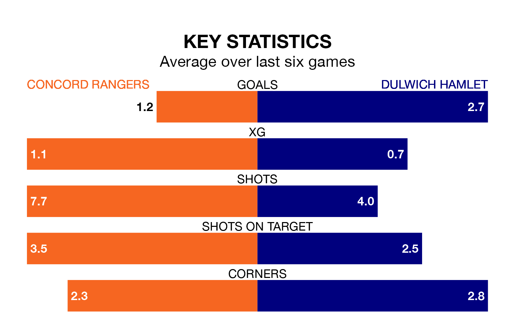

Dulwich Hamlet are strong favourites to take all three points despite Concord Rangers's home advantage in Saturday's match at Thames Road.
*Betting Company* are offering odds of 1.95 on Dulwich Hamlet sealing the win, with the visitors sitting 11th in the Isthmian Premier Division table.
Concord, who are 20th in the league and 24 points behind Dulwich Hamlet, are priced at 3.1 to win. A draw is set at 3.6.
With 22 goals in 23 games so far this season, Concord are the league's lowest scorers with 1.0 goals per game. And they are conceding more than average, letting in 43 goals at a rate of 1.9 per game.
Dulwich Hamlet, meanwhile, are above average scorers, with 1.9 goals per game, compared to a league average of 1.6. They have conceded 1.7 goals per game.
In the last 10 years, Concord and Dulwich Hamlet have played each other on nine occasions. They won two each, and they drew five times.
On average, the Beach Boys scored 1.2 goals and Dulwich Hamlet 1.3 in those matches.
Their last meeting was on September 23, when Dulwich Hamlet won 2-0 at home.
Rangers are in mixed form in the Isthmian Premier Division, with one win and four draws from their last six games.
With four wins and a draw over that period, the visitors' form is much better – they have taken 13 points from 18, compared to the Beach Boys' seven.
Concord's last match was on Sunday, a 1-1 draw against Cray Wanderers.
Dulwich Hamlet lost 3-2 against AFC Hornchurch last time out, on February 10.
Updated: 12:06 (UTC), 15/02/24